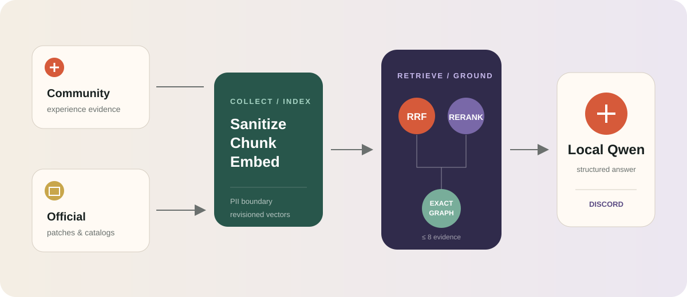
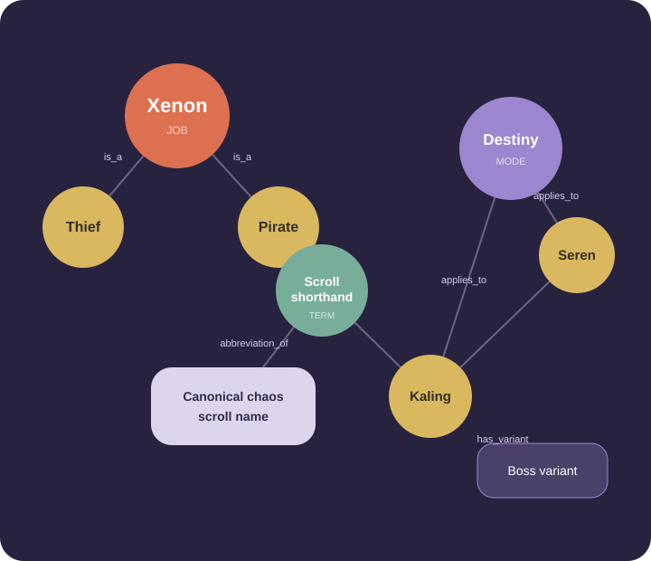

관련 경험을 찾는다
Dense와 lexical 검색을 결합해 표현이 달라도 관련된 공략·후기·댓글을 찾습니다.
Local-first · Hybrid retrieval · Provenance
Maple Chat은 Inven의 경험 지식, Nexon 공식 패치, 검수된 도메인 지식 그래프를 함께 검색하고 로컬 Qwen으로 답하는 Discord Knowledge-Graph-Augmented RAG입니다.

01 / Overview
벡터 유사도는 관련 글을 찾지만, 제논이 어느 직업군인지 또는 벨로나와 메이린이 같은 보스인지 보장하지 않습니다. Maple Chat은 검색과 엔티티 무결성을 서로 다른 계층에서 해결합니다.
Dense와 lexical 검색을 결합해 표현이 달라도 관련된 공략·후기·댓글을 찾습니다.
직업·보스·난이도를 entity로 고정해 다른 대상의 기록을 질문에 대입하지 않습니다.
성공 사례, 실패 경험, 공식 사실을 구분하고 답변에 사용한 출처 관계를 보존합니다.
02 / Pipeline
수집부터 생성까지 모든 단계는 독립적으로 실패하고, 근거가 부족하면 닫힌 방향으로 종료됩니다.
승인된 7개 게시판의 글·댓글과 공식 패치노트를 별도 수집기로 가져옵니다.
이메일·전화번호를 마스킹하고 닉네임은 salted HMAC으로 변환합니다.
제목·게시판·질문 문맥·댓글 역할을 담은 청크를 BGE-M3 1024차원 벡터로 만듭니다.
Dense와 pg_trgm 순위를 RRF로 합치고 BGE reranker로 최종 근거를 고릅니다.
질문의 직업·보스·약어를 exact relation으로 조회하고 다른 entity의 유입을 막습니다.
공식 관계와 비신뢰 근거를 분리 전달하고, 실제 사용 출처와 token 지표를 기록합니다.
03 / Hybrid RAG
의미 유사도, 문자열 일치, 재랭킹과 제한된 품질 신호를 단계별로 조합합니다.
질문과 청크를 같은 BGE-M3 공간에 놓고 cosine distance로 의미가 가까운 글을 찾습니다.
Dense와 lexical의 순위를 결합한 뒤 cross-encoder가 질문과 후보를 다시 함께 읽습니다.
직업명·보스명·약어와 같은 정확한 표면어를 pg_trgm GIN 인덱스로 보완합니다.
04 / Knowledge graph
직업 계층, 공식 명칭, 보스 난이도와 콘텐츠 모드를 versioned entity·relation으로 관리합니다. 벡터 검색이 관계를 추측하도록 두지 않습니다.

제논is_a도적 · 해적놀긍abbreviation_of놀라운 긍정의 혼돈 주문서카링 (데스티니)uses_mode데스티니 모드05 / Operations
다음 수치는 공개용 실시간 대시보드가 아니라 2026-08-25 17:49 KST 운영 DB의 검증된 정적 snapshot입니다.
7개 게시판의 최신 1페이지를 순차 수집하고 변경된 source만 다시 색인합니다.
최근 365일 window에서 신규·수정된 Nexon 업데이트 상세만 다시 가져옵니다.
게시판별 checkpoint에서 200페이지까지 round-robin으로 진행하고 슬라이스마다 색인합니다.
모델 생성 답변마다 사용량과 실제 처리 시간을 표시하고 같은 값을 구조화 로그에 남깁니다.
Input6,209 tok1,232.0 tok/s · TTFT 기반
Output254 tok4.4 tok/s
Total65.21 secretrieval → persistence
06 / Quality loop
오답을 숨기지 않고 문제 정의, 해결 방식, 검증 결과와 남은 위험을 같은 형식으로 기록합니다.
질문글의 가정을 답변 주장으로 재사용하던 문제를 발견했습니다.
질문 문맥과 댓글 주장을 구조적으로 분리
자유 생성이 약어의 공식 명칭을 바꾸는 문제를 확인했습니다.
abbreviation relation 검증 후 재생성 또는 graph fallback
유사한 보스 문맥이 다른 entity의 기록을 끌어오는 문제를 확인했습니다.
Job AND boss scope와 공식 boss variant graph
하나의 표면어가 무기와 보스 모드 양쪽에 쓰이는 다의어 문제를 발견했습니다.
동일 span의 복수 entity와 문맥별 relation traversal
문제 정의 → 원인과 증거 분리 → 일반화된 해결 → 회귀 테스트 → 운영 재검증 → 남은 위험 기록
07 / Stack
Python 3.12, PostgreSQL 16, pgvector, BGE-M3, BGE reranker, Qwen, discord.py. 새 abstraction보다 명시적인 경계와 회귀 가능한 데이터를 우선합니다.